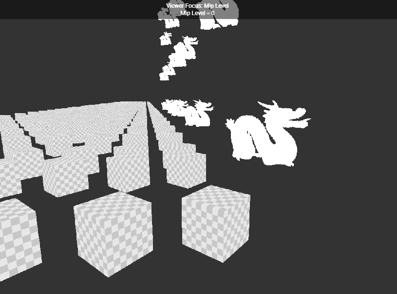
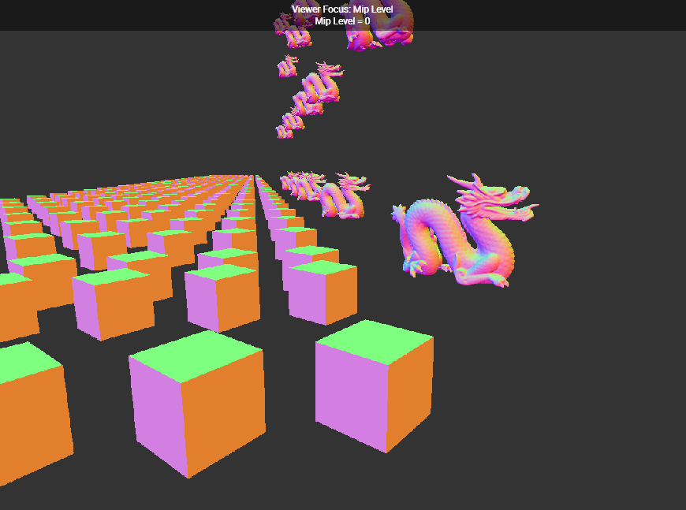
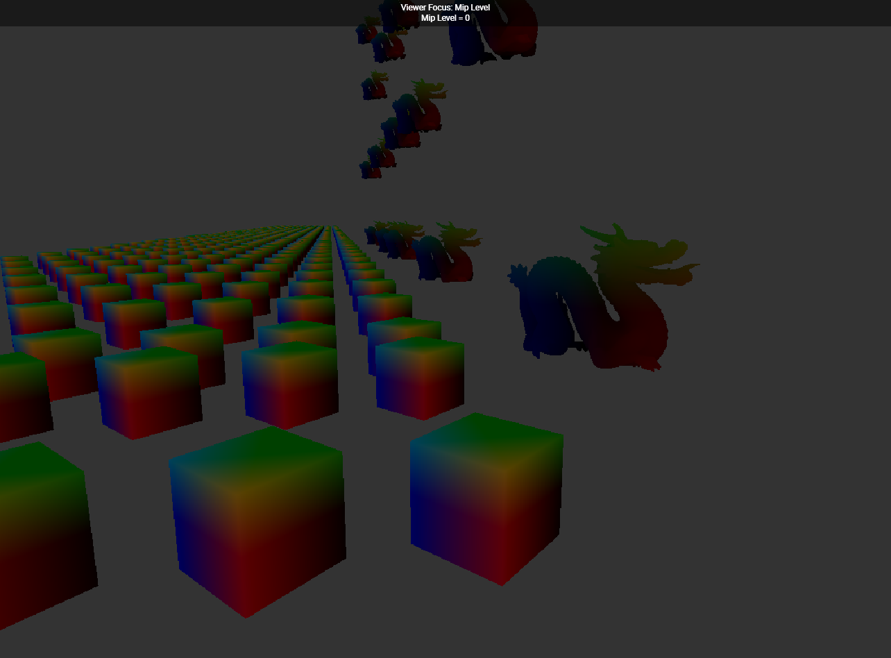

Custom C++ Game Engine
4 threads — World · Render · RHI ·
Asset — mirroring Unreal's split between game logic and rendering. Built on the
four systems in the nav above.
01
Threading & Frame Sync
FrameGate — a producer/consumer condition-variable pairsequence — World → Renderer → RHI, one frame
sequenceDiagram
participant WW as WorldWorker
participant FG1 as FrameGate (updateGate)
participant RCL as RenderCommandList
participant RW as RenderWorker
participant FG2 as FrameGate (renderGate)
participant RHICL as RHICommandList
participant RHIW as RHIWorker
participant GPU as GPU
WW->>WW: ECS Update
WW->>RCL: Commander.AddPrimitive / Update / SetView
WW->>FG1: Submit()
FG1->>RW: Acquire()
RW->>RHICL: Executor.Acquire()
RW->>RCL: ExecuteAll(renderer, cmdList)
RW->>RHICL: RenderGraph.Execute()
RW->>RHICL: Executor.Submit(cmdList)
RW->>FG2: Submit()
FG2->>RHIW: Acquire()
RHIW->>RHICL: FrameExecutor.Execute()
RHICL->>GPU: RHICommand::Execute(RHISystem)
GPU->>GPU: DrawIndexPrimitive / Present
RHIW->>RHIW: TaskExecutor.Execute()
sequence — Asset pipeline, the other path into RHI
sequenceDiagram
participant AS as AssetSystem
participant AW as AssetWorker
participant TW as TaskWorker Pool
participant RTE as RHITaskExecutor
participant RHIW as RHIWorker
AS->>AS: Load(path) - state = eLoaded
AW->>TW: Parse - state = eParsed
AW->>RTE: Load - enqueue RHICommandInitializeBuffer
RHIW->>RTE: Execute - glBufferData / glTexImage2D
Note right of RHIW: state = eReady
RenderCommandList is zero-allocation — two
LinearArenas ping-pong,
World writes lambdas into one while Render drains the other.
02
Four Layers
World never imports a render type · RHI is the only layer that calls a graphics APIWorldContext
type map — WorldContext
WorldContext RootPtr<World> world RefPtr<Commander> commander Update(timeStep) World Scene scene CreateEntity() -> ObjectPtr<Entity> CreateComponent<T>() -> ObjectPtr<T> CreateNode<T>() -> ObjectPtr<T> Commander Enqueue(renderTask) SetView(renderView) ProxyComponent «abstract» ├─ TransformComponent ├─ StaticMeshComponent └─ LightComponent ── wiring ────────────────────────────── WorldContext owns World, Commander StaticMeshNode uses TransformComponent, StaticMeshComponent Scene notified-by ProxyComponent.IsDirty(), pushes via Commander
A ProxyComponent never talks to the renderer — it flips
IsDirty(), Scene notices, a snapshot goes out through
Commander.
Renderer
type map — Renderer
Renderer Execute(cmdList) RenderGraph DynamicArray<RenderPass> m_passes Execute(cmdList, scene, view) RenderPass «abstract» Draw(drawCommands, lights, cmdList) -> bool ├─ ComputePass «abstract» │ ├─ TransformPass (GPU TRS compute) │ └─ CullingPass (stub, pass-through) └─ GraphicPass «abstract» ├─ GeometryPass (fills GBuffer) └─ LightingPass (per-light screen quad) MeshDrawCommand RefPtr<RHIBuffer> rawTransform RefPtr<RHIBuffer> transform RefPtr<RHIVertexLayout> vertexLayout RefPtr<MaterialProxy> material ── wiring ────────────────────────────── Renderer owns RenderScene, RenderGraph RenderScene owns MeshBatch[] , each MeshBatch owns 1 MeshDrawCommand
One MeshDrawCommand per (mesh, material) → one draw call.
GeometryPass binds vertex layout +
transform SSBO + material,
then issues a single indexed draw covering every instance in the batch.RenderPass splits into ComputePass and GraphicPass, not one base.
ComputePass just dispatches a shader; GraphicPass owns full pipeline state (clear, depth,
blend, rasterizer). RenderGraph is just an ordered list of these, walked once a frame.



RHI
type map — RHI
RHISystem «abstract» CreateBuffer(desc) -> RefPtr InitializeBuffer(info, buffer) DrawIndexPrimitive(info) DispatchCompute(info) └─ GLSystem RHICommandList Enqueue<T>(...) ExecuteAll() RHIFrameExecutor DynamicArray<RHICommandList> m_listPool atomic<size_t> m_endIndex Acquire() -> RefPtr<RHICommandList> Execute() ── wiring ────────────────────────────── RHICommandList holds RHICommandBase[] (45+ command types) RHIFrameExecutor triple-buffers RHICommandList RHICommandList delegates every call to RHISystem
An OpenGL context has thread affinity — calling it off-thread is undefined behavior. Every GPU call is a
command object; only
RHIWorker ever executes one.
Asset
type map — Asset
Asset UUID id ├─ MeshAsset DynamicArray<MeshSection> sections ├─ MaterialAsset eShadingModel shadingModel └─ TextureAsset RefPtr<RHITexture> texture AssetParser «abstract» Parse(asset) Load(asset, cmdList) ├─ OBJParser └─ StbImageParser ── state machine ──────────────────────── eLoaded --AssetSystem.Create()--> eParsed --TaskWorker.Parse()--> eReady --RHIWorker upload--> Parse = CPU-bound, TaskWorker pool (parallel) Load = GPU format conversion, AssetWorker Upload = glBufferData / glTexImage2D, RHIWorker only
03
Feature Status
from the repo's own Implementation Status table| Feature | Status |
|---|---|
| ECS / Memory (GC) / Reflection / Containers | complete |
| World · Commander · Scene · 4-thread Worker system | complete |
| RHI layer (OpenGL) · Command List · triple buffering | complete |
| Proxies · MeshBatch instancing · RenderGraph | complete |
| TransformPass (GPU compute TRS) | complete |
| GeometryPass · LightingPass (Directional / Point / Spot) | complete |
| GBuffer Phong (UInt texture support) | complete |
| Asset system (3-stage async pipeline) | complete |
| Directional shadow mapping | complete |
| CullingPass | stub — pass-through |
| GC full integration | in progress |
| Cascade shadow maps | planned |
| Spot / Point light shadows | planned |
| Vulkan backend | planned |
| Physics | planned |
04
Issues Worked Through
from the repo's issue tracker and debug logsShadow acne / NaN / blinking resolved
Symptom
Camera rotation intermittently turned whole objects solid black; static RenderDoc captures looked fine.
Cause
At grazing angles the RPDB depth-bias divisor (
det) approached 0, producing NaN that propagated straight to FragColor.Fix
Block NaN at the source (
safeDet = mix(EPSILON, det, step(EPSILON, abs(det)))) instead of trying to mask it after the fact — multiplying or mix-ing against NaN still produces NaN. Also moved the grazing-angle cutoff to a single multiply at the very end, since branching before a dFdx call is undefined behavior in GLSL.Multi-proxy dirty-flag race resolved
Symptom
An entity with both a light and a mesh sharing one Transform would silently stop updating one of the two after the first frame.
Cause
The Hash Storm fix's
if (!IsDirty()) OnUpdate() guard cleared a dirty flag that lived on the shared Component — whichever Proxy processed first cleared it for both.Fix
Per-proxy dirty generation counters: the Component only increments a generation number on mutation, and each Proxy independently tracks the last generation it has seen.
Point light incident-direction artifact open
Symptom
A light positioned below a surface makes that surface brighter than expected, right at the light volume's boundary.
Cause
The two-sided lighting correction's
max(dot(normal, rayDir), 0.0) clamps to 0 in this case, so the incident direction never gets corrected.Direction
Compute the correction from light→fragment instead of fragment→light; a proper shadow map would also occlude this case naturally.
03
Measured Results
shadow mapping · deferred rendering · 1M-instance optimizationTransformPass: TRS→matrix moved onto the GPU.
Compute shader replaced per-instance CPU GLM math. 500K instances @ 20 FPS Release
— ~10× over the CPU path (couldn't hold 10 FPS Debug past 30K).
Hash Storm: an unconditional insert was the bottleneck.
2M
HashSet::Insert calls/frame at 1M instances → an
if (!IsDirty()) guard cut that to once per frame: 5.4 → 22 FPS Debug.Shadow shimmering: fixed by snapping, not more samples.
Camera-frustum center quantized to the shadow map's texel grid before recomputing the
light view matrix — removes jitter under camera motion.